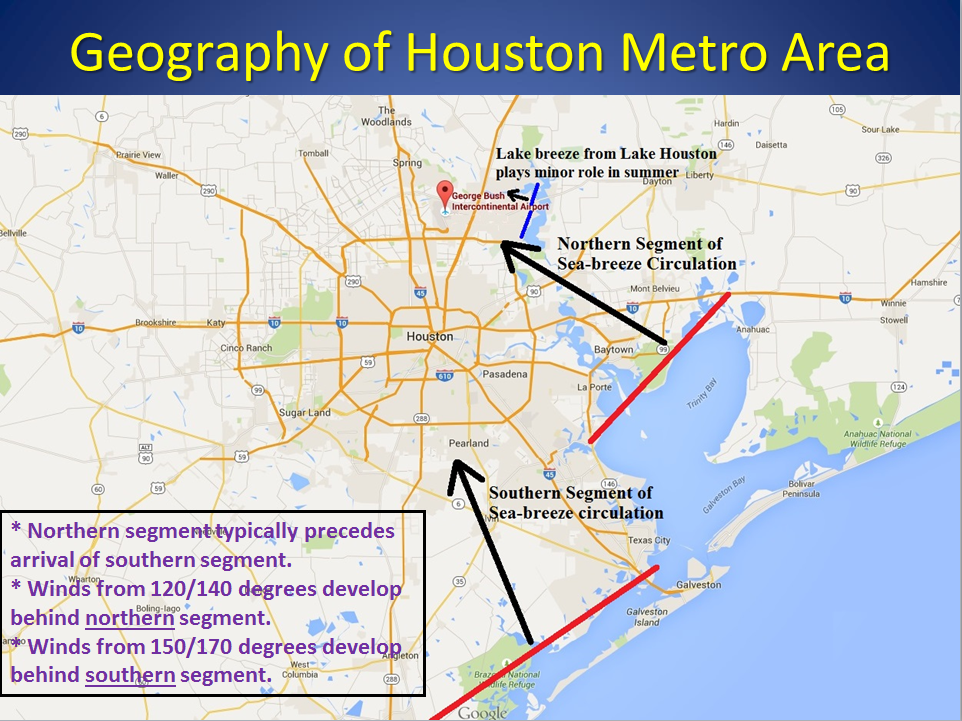
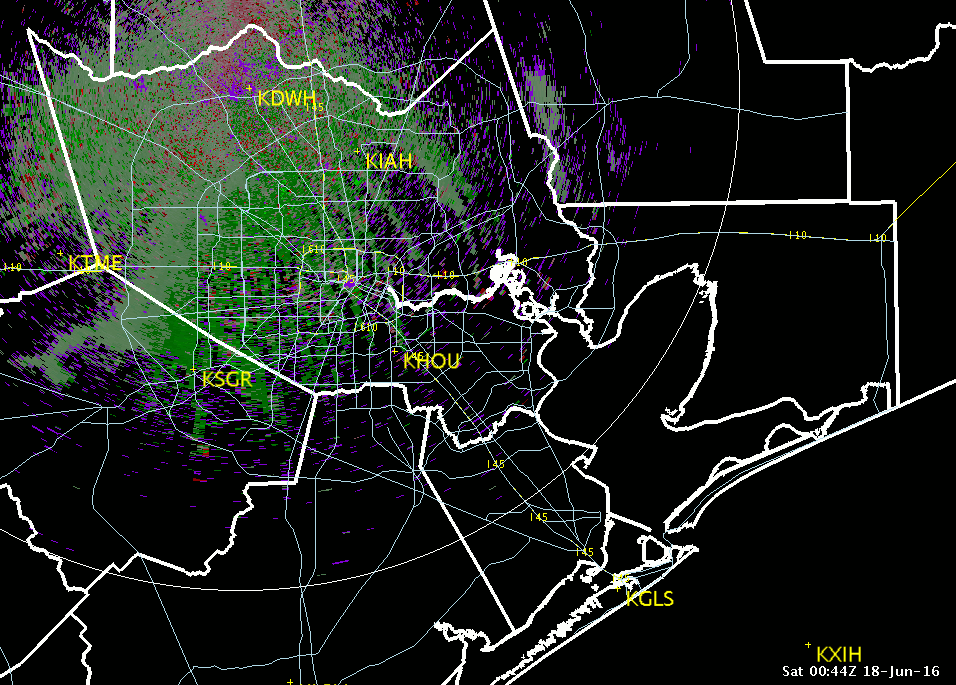
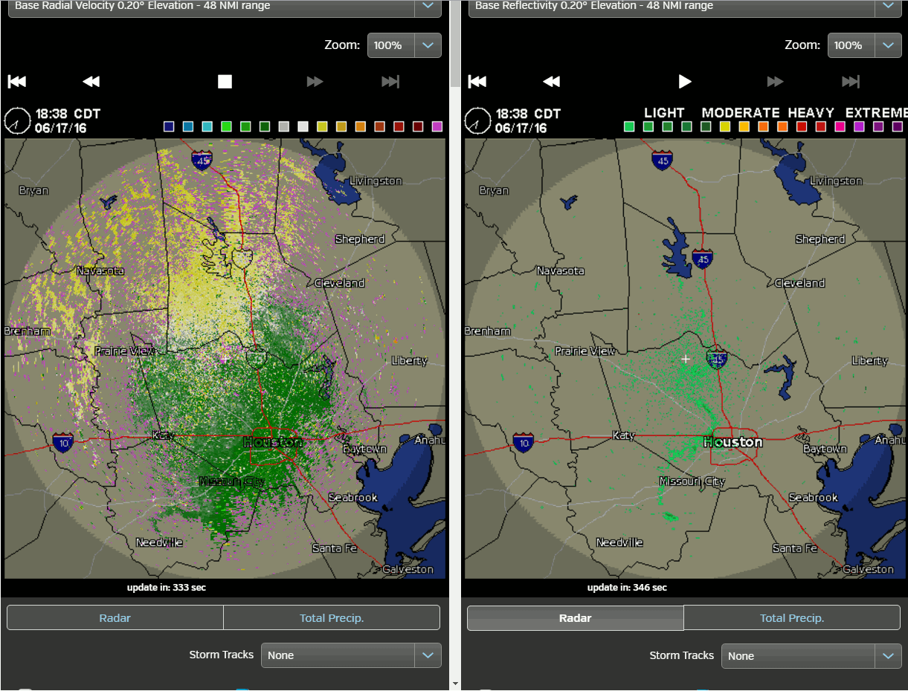
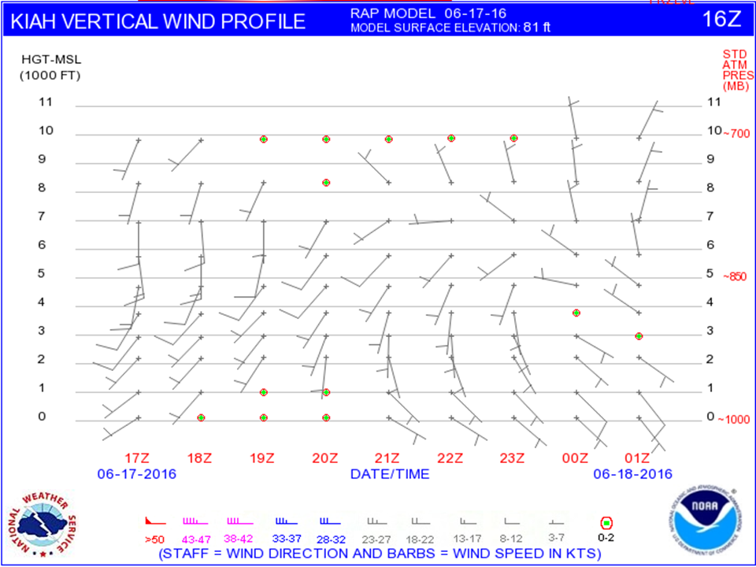
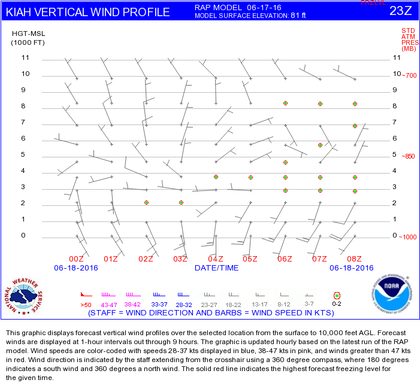
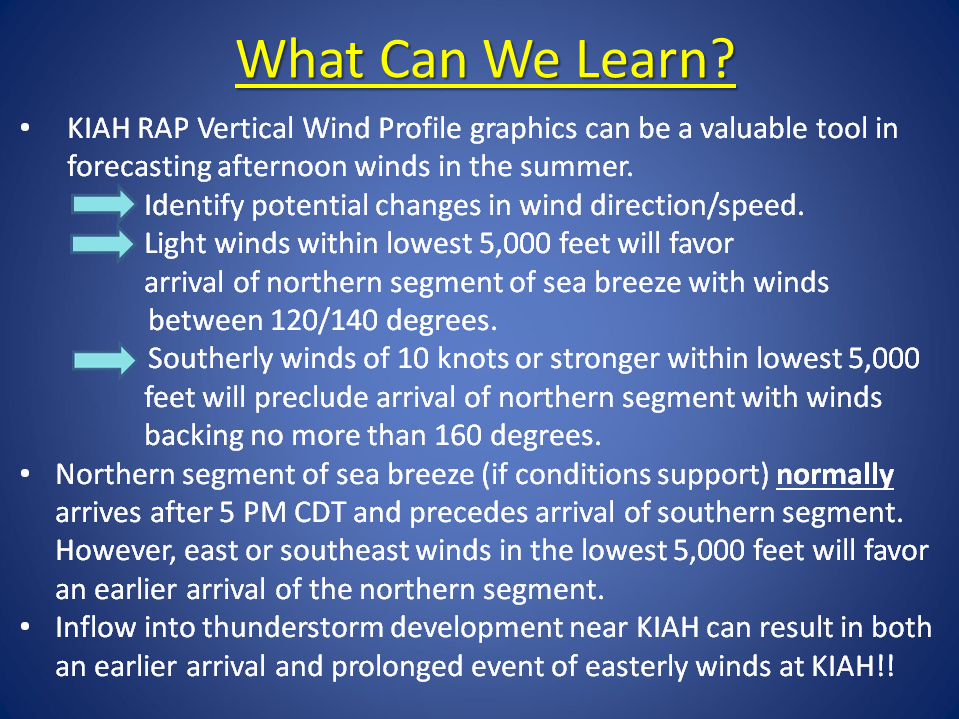

ZHU Training Page archive · Seabreeze Wind Event at KIAH *** · Source: http://www.weather.gov/media/zhu/ZHU_Training_Page/ZHU_Presentations/Seabreeze_Winds.ppsx · Captured 2026-08-19 06:00 UTC · Rendered from PowerPoint (9 slides); layout is approximate — original file: source/Seabreeze_Winds.ppsx
Slide 1
Case Study of Sea Breeze Propagation across I-90 TRACON
Eric Zappe National Weather Service Houston Center Weather Service Unit
Slide 2
This tutorial is follow-up to presentation titled Forecasting Summertime Winds at KIAH
The event took place during afternoon of June 17, 2016.
The following slides contain radar loops of tiah radar.
Slide 3

Slide 4

tiah 0.1 Degree Velocity - Animation
Southeasterly winds associated with Galveston Bay breeze (northern segment of sea breeze)
Southerly winds associated southern segment of sea breeze (late arrival)
Slide 5

tiah 0.1 Degree Velocity - Animation
tiah 0.2 Degree Velocity
tiah 0.2 Degree Reflectivity
Weak easterly winds associated with Lake Houston breeze preceded Galveston Bay breeze
Slide 6
Slide 7


KIAH RAP Vertical Wind Profile - June 17, 2015 16Z issuance - top image 23Z issuance – bottom
NOTE: 17Z issuance indicated light SE through southwest winds (i.e., 5 knots) would extend from surface through the lowest 5,000 feet and last through at least 01Z.
Slide 8

Slide 9
What Can We Learn?
Lake Houston breeze plays a minor role on winds at KIAH in the summertime. Wind speeds are usually less than 10 knots. However, easterly winds at KIAH may begin as early as 4 PM.